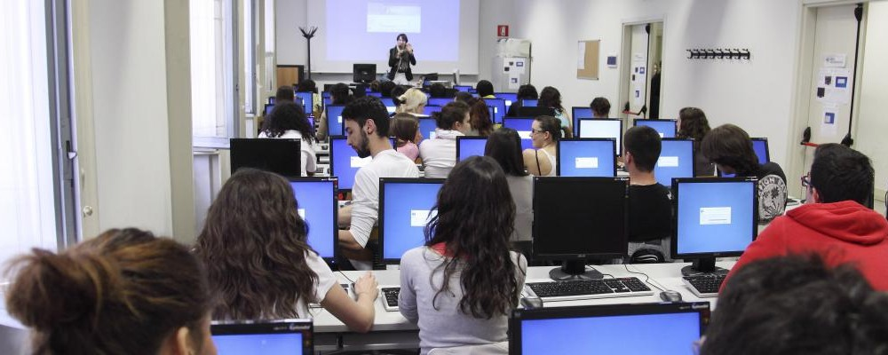

Make stories that stand out.
MA in Public and Corporate Communication, two years in the centre of Milan, between companies, institutions and politics.
How to apply
The programme
The Master's degree gives you a specialisation in public communication, corporate communication, marketing, advertising, and market and opinion research. It is an interdisciplinary programme, with sociology, economics, law and political science, and it keeps close contact with companies in Italy and abroad and with public and political organisations.
- Corporate side
- Brand communication, marketing and advertising.
- Public side
- Communication for institutions, public bodies and politics.
- Research
- Surveys, market research and public opinion.

Useful links
Before you start
During the degree
After graduation
Students and quality
Students have a say in how the programme is run, through surveys and the joint staff-student committee. This short video from La Statale explains how.
How to get here
Via Conservatorio 7, 20122 Milano
Department of Social and Political Sciences
Closest metro stop: San Babila (M1 and M4), about 5 minutes on foot. Check the ATM website for live transit times.
Next to the building is the church of Santa Maria della Passione, and Torre Velasca from the photo above is a short walk away.
Do more at uni
- Join one of the UNIMI sports teams
- Apply for the IUSS Pavia Course of Excellence
- Read La Statale News